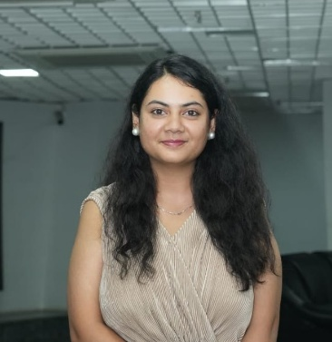
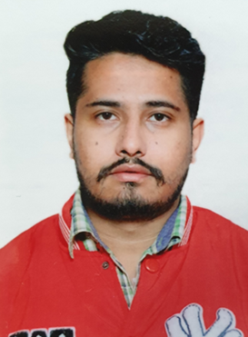
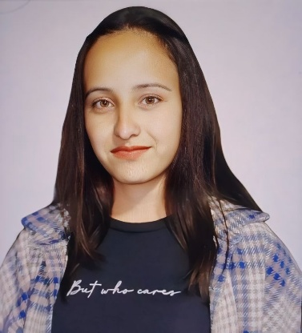
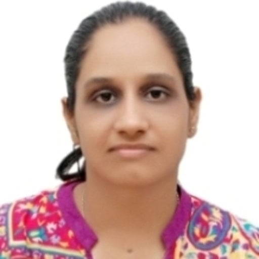

People
Meet the Principal Investigator and members of the MMST Group. Hover over a person for a quick profile. Click (or tap) to run the full identification scan.

Prof. Akash Deep
Principal Investigator
Research Interests:
- Bio and chemo sensors
- Sensor development for environmentally important analytes
- Energy applications of nanomaterials and their composites
- Recovery of valuable products from E-waste and other low-grade sources
Current Group Members — PhD Scholars

Abhijeet Kumar Gupta
PhD Scholar
abhijeet.ph23218@inst.ac.in

Taniya Gupta
PhD Scholar
taniya.ph23230@inst.ac.in

Rohit
PhD Scholar
rohit.ar240101@inst.ac.in

Manisha Negi
PhD Scholar
manisha.ar250801@inst.ac.in
Aditi Sharma
PhD Scholar
aditi.ph26206@inst.ac.in
Other Members
Dr. Neha Bhardwaj
DST-Women Scientist (WISE SCOPE Fellow)
nehabhardwaj@inst.ac.in

Dr. Naini Garg
Research Associate
naini.ra202401@inst.ac.in